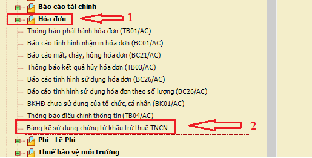
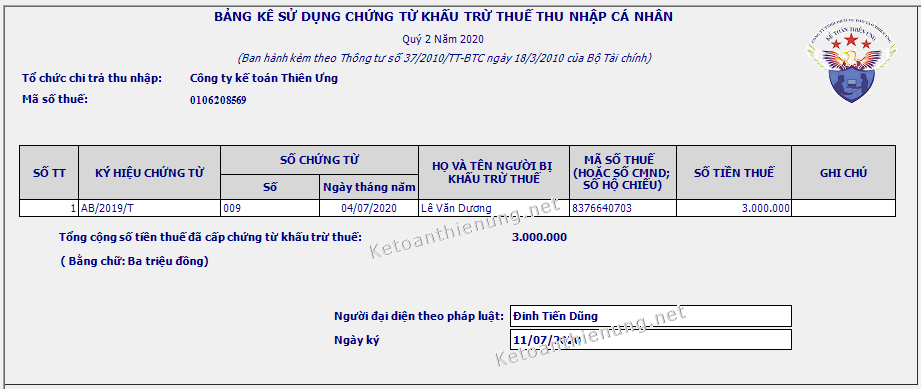
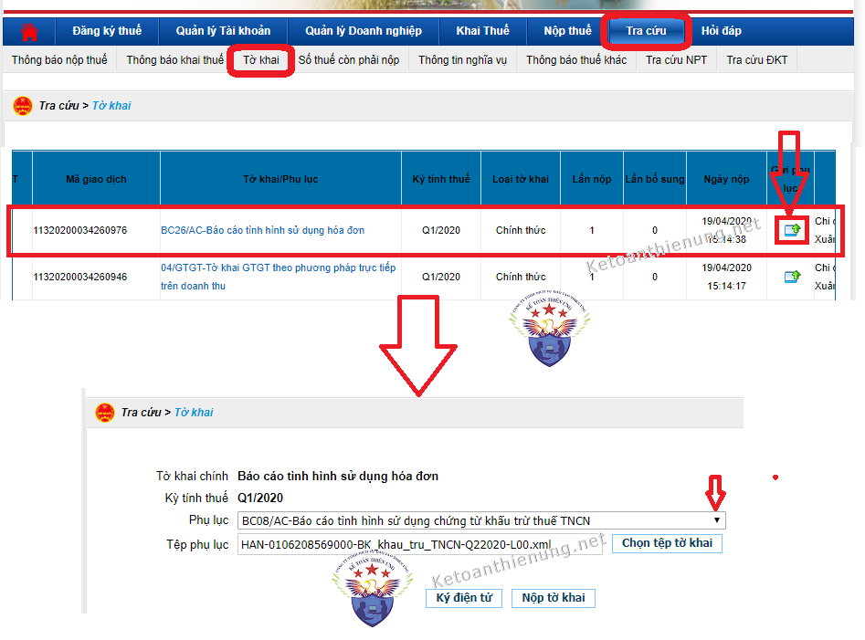

Mẫu CTT25/AC Bảng kê Chứng từ khấu trừ thuế TNCN: Cách lập Báo cáo sử dụng Chứng từ khấu trừ thuế TNCN trên HTKK; Cách nộp bảng kê chứng từ khấu trừ thuế TNCN qua mạng; Thời hạn nộp Bảng kê Chứng từ khấu từ thuế TNCN:
- Hàng quý những DN có sử dụng Chứng từ khấu trừ thuế TNCN thì phải báo cáo tình hình sử dụng Chứng từ khấu trừ thuế TNCN (Mẫu mẫu CTT25/AC ban hành kèm theo Quyết định số 440/QĐ-TCT)
1. Những trường hợp phải cấp Chứng từ khấu trừ thuế TNCN:
“a) Tổ chức, cá nhân trả các khoản thu nhập đã khấu trừ thuế theo hướng dẫn tại khoản 1, Điều này phải cấp chứng từ khấu trừ thuế theo yêu cầu của cá nhân bị khấu trừ. Trường hợp cá nhân ủy quyền quyết toán thuế thì không cấp chứng từ khấu trừ.
b) Cấp chứng từ khấu trừ trong một số trường hợp cụ thể như sau:
b.1) Đối với cá nhân không ký hợp đồng lao động hoặc ký hợp đồng lao động dưới ba (03) tháng: cá nhân có quyền yêu cầu tổ chức, cá nhân trả thu nhập cấp chứng từ khấu trừ cho mỗi lần khấu trừ thuế hoặc cấp một chứng từ khấu trừ cho nhiều lần khấu trừ thuế trong một kỳ tính thuế.
Ví dụ: Ông Quang Hưng ký hợp đồng dịch vụ với Công ty tư vấn Minh Phúc để chăm sóc cây cảnh tại khuôn viên của Công ty theo lịch một tháng một lần trong thời gian từ tháng 9/2020 đến tháng 4/2021. Thu nhập của ông Q được Công ty thanh toán theo từng tháng với số tiền là 03 triệu đồng.
=> Như vậy, trường hợp này ông Q có thể yêu cầu Công ty cấp chứng từ khấu trừ theo từng tháng hoặc cấp một chứng từ phản ánh số thuế đã khấu trừ từ tháng 9 đến tháng 12/2020 và một chứng từ cho thời gian từ tháng 01 đến tháng 04/2021.
b.2) Đối với cá nhân ký hợp đồng lao động từ ba (03) tháng trở lên: tổ chức, cá nhân trả thu nhập chỉ cấp cho cá nhân một chứng từ khấu trừ trong một kỳ tính thuế.
Ví dụ: Ông Thanh Phong ký hợp đồng lao động dài hạn (từ tháng 9/2020 đến tháng hết tháng 8/2021) với công ty Y. Trong trường hợp này, nếu ông R thuộc đối tượng phải quyết toán thuế trực tiếp với cơ quan thuế và có yêu cầu Công ty cấp chứng từ khấu trừ thì Công ty sẽ thực hiện cấp 01 chứng từ phản ánh số thuế đã khấu trừ từ tháng 9 đến hết tháng 12/2020 và 01 chứng từ cho thời gian từ tháng 01 đến hết tháng 8/2021.”
(Theo khoản 2 điều 25 Thông tư 111/2013/TT-BTC)
---------------------------------------------------------------------------
Theo điểm 3, Phần thứ ba, Quyết định 440/QĐ-TCT ngày 14/3/2013 của Tổng cục trưởng Tổng cục Thuế) quy định:
"Báo cáo tình hình sử dụng biên lai thuế, chứng từ khấu trừ thuế thu nhập cá nhân của tổ chức trả thu nhập (mẫu CTT25/AC); thời hạn gửi báo cáo: chậm nhất là ngày 30 của tháng đầu quý sau."
-----------------------------------------------------------------------------------------------------
--------------------------------------------------------------------------------------------------
Các bạn lưu ý phần này nhé:
- Hiện tại nhiều Chi cục Thuế đang hướng dẫn các cách nộp Báo cáo sử dụng chứng từ khấu trừ thuế TNCN điện tử khác nhau => Nên chi tiết các bạn liên hệ với Chi cục thuế quản lý DN để được hỗ trợ cụ thể về cách nộp nhé.
Cụ thể như sau: Trước đây thì DN sử dụng hóa đơn giấy -> Nộp báo cáo tình hình sử dụng hóa đơn xong là có thể nộp đính kèm Báo cáo sử dụng chứng từ khấu trừ thuế TNCN này (Cụ thể cách 2 bên dưới, đây là cách nộp qua mạng trước đây)
-> Nhưng hiện tại tất cả các DN đã sử dụng hóa đơn điện tử nên Không phải nộp Báo cáo tình hình sử dụng hóa đơn nữa -> Như vậy là không nộp đính kèm qua mạng được nữa.
- Nhiều chi Cục thuế đang hướng dẫn là nộp bản giấy trực tiếp (Tức là DN làm xong thì mang lên Bộ phận 1 cửa của Chi cục thuế để nộp.
=> Sau khi đã xác định được hình thức mà Chi cục thuế tiếp nhận Bảng kê các bạn làm như sau nhé:
Cách 1: Cách làm Bảng kê chứng từ khấu trừ thuế TNCN nộp trực tiếp:
Bước 1: - Các bạn tải Mẫu Báo cáo sử dụng Chứng từ khấu trừ thuế TNCN về tại đây:
- Hoặc các bạn có thể làm trên phần mềm HTKK (theo cách 2 bên dưới) => Rồi Kết xuất -> In ra bản cứng, mang lên nộp trực tiếp cho cơ quan thuế.
BẢNG KÊ CHỨNG TỪ Quý 3 năm 2022
|
=> Lập xong các bạn mang trực tiếp lên Bộ phận 1 cửa của Chi cục thuế để nộp nhé.
----------------------------------------------------------------------------------
Chú ý: Trước đây khi DN nộp Báo cáo sử dụng hóa đơn thì nộp đính kèm Báo cáo sử dụng chứng từ khấu trừ thuế TNCN được -> Nhưng hiện tại đã sử dụng hóa đơn điện tử, không phải nộp Báo cáo sử dụng hóa đơn nữa -> Nên hiện tại không nộp Báo cáo sử dụng chứng từ khấu trừ thuế TNCN điện tử qua mạng được nữa nhé (Khi nào Thuế cập nhật Diệu tâm sẽ cập nhật lên đây nhé!)
Bước 1: Làm bảng kê chứng từ khấu trừ thuế trên phần mềm HTKK:
- Đăng nhập vào phần mềm HTKK bằng MST của Doanh nghiệp -> Chọn mục "Hóa đơn" => Chọn "Bảng kê sử dụng chứng từ khấu trừ thuế TNCN"

Tiếp đó các bạn lập bảng kê chứng từ khấu trừ thuế TNCN trên HTKK:

Quy định về Ký hiệu chứng từ khấu trừ thuế TNCN:
- Chứng từ khấu trừ phải có ký hiệu và ký hiệu được sử dụng các chữ cái trong 20 chữ cái tiếng Việt in hoa (A, B, C, D, E, G, H, K, L, M, N, P, Q, R, S, T, U, V, X, Y), ký hiệu gồm 02 chữ cái và năm in phát hành.
Ví dụ: AB/2010/T, trong đó AB là ký hiệu; 2010 là năm phát hành chứng từ; T là chứng từ tự in.
(Theo điều 2 Thông tư 37/2010/TT-BTC)
- Nhưng hiện tại trên phần mềm HTKK chỉ nhập được định dạng CC/YYYY/T => Nên các bạn cũng nhập là /T nhé (Ví dụ nhập /P thì phần mềm HTKK báo sai không kết xuất được nhé).
=> Sau khi khai xong, các bạn kết xuất XML hoặc Excel để nộp qua mạng.
Bước 2: Nộp Bảng kê chứng từ khấu trừ thuế TNCN qua mạng:
- Các bạn truy cập vào website thuedientu.gdt.gov.vn => Đăng nhập bằng MST của DN (Nhớ là phải cắm Chữ ký số vào đó nhé).
Chú ý bước này nhé, đó là các bạn phải nộp Báo cáo tình hình sủ dụng hóa đơn quý đó xong -> Thì mới nộp được nhé, cụ thể như sau:
- Sau khi nộp xong Báo cáo tình hình sử dụng hóa đơn, các bạn vào "Tra cứu" => "Tờ khai" => Rồi chọn "Báo cáo tình hình sử dụng hóa đơn" đính kèm phụ lục.

-> Sau khi đính kèm xong, các bạn ấn Ký điện tử, rồi nộp nhé.
-----------------------------------------------------------------------------------
Xem thêm: Quy định về chứng từ khấu trừ thuế TNCN điện tử (Quy định đăng ký, phát hành, nội dung trên chứng từ khấu trừ thuế TNCN điện tử...)
Kế toán Diệu Tâm xin chúc các bạn thành công!
-------------------------------------
-------------------------------------